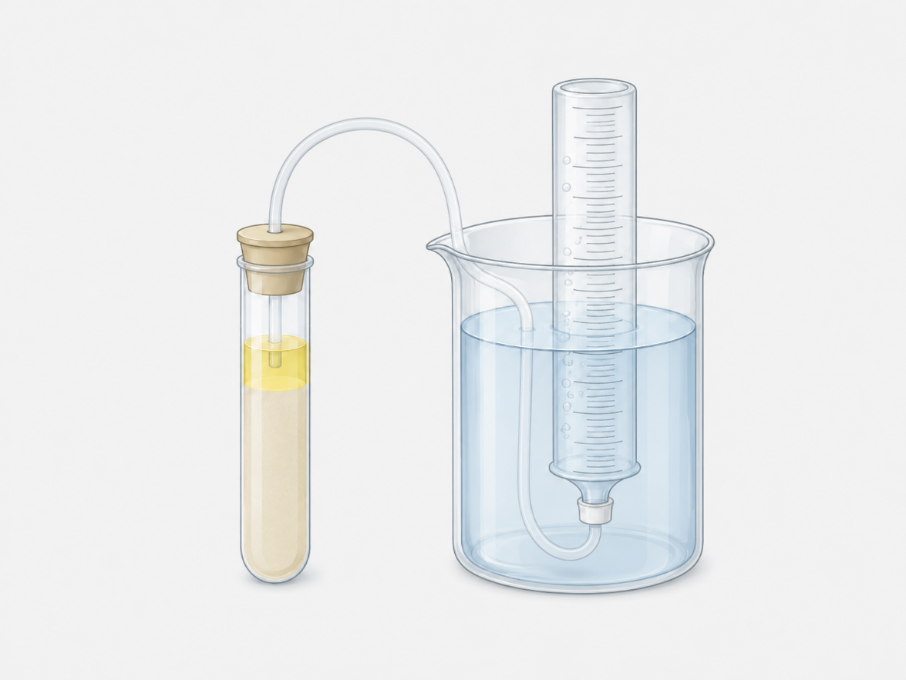
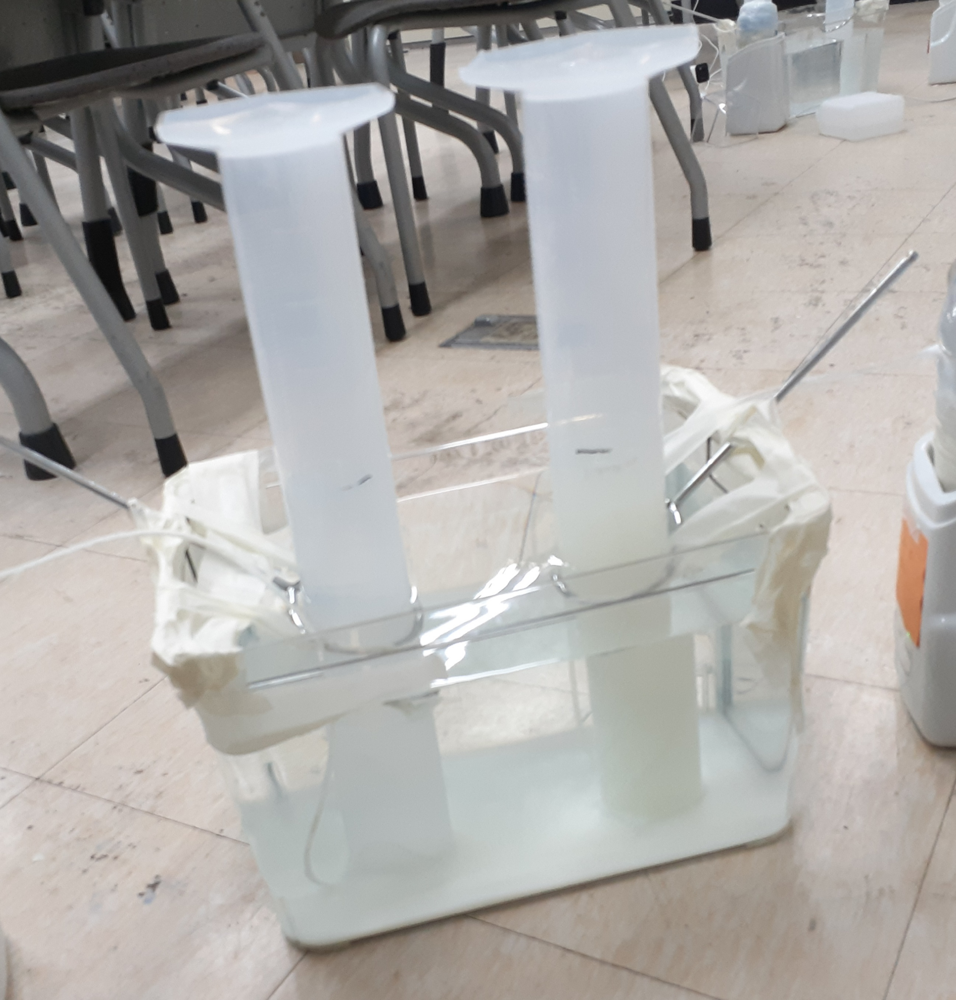
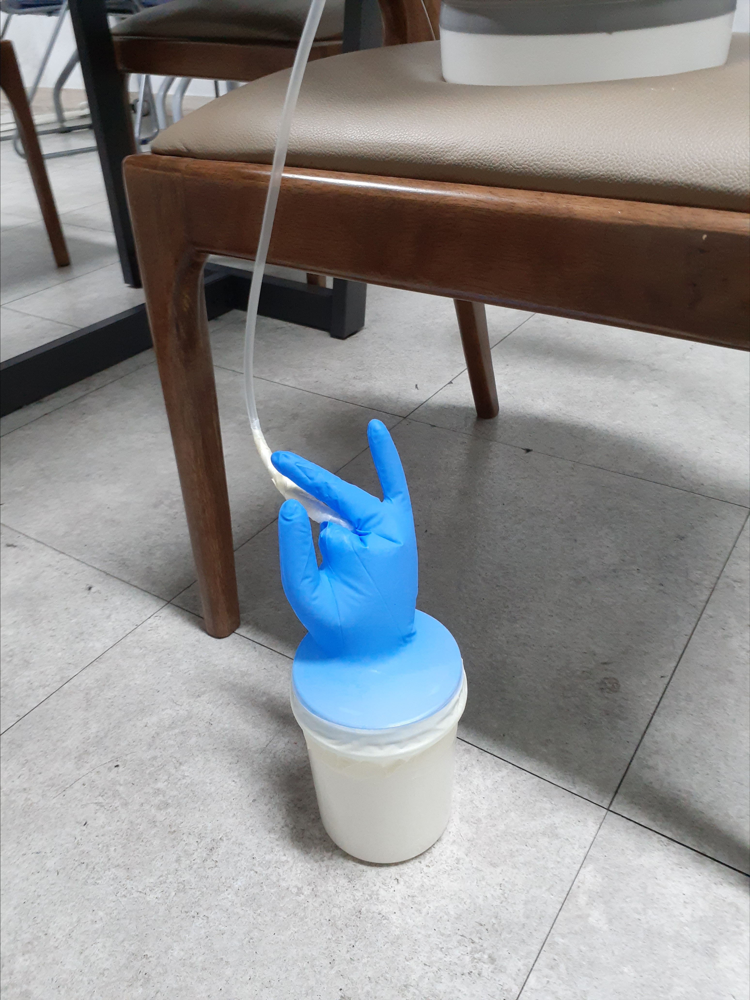

실험 기반 수학-의생명 융합 프로그램
항종양 치료 모사 실험
(효모–유산균 모형)
정상 세포는 보존하고 종양 세포만 억제하는 최적의 약물 농도 구간—‘골든 윈도우(Golden Window)’를 생물 실험과 수학적 모델링으로 탐구합니다.
목차
활동 동기
MTD의 종말과 패러다임 대전환
수학이 바꾸는 투약 전략 & ‘선택적 독성’
실험 소개 (단일 챔버 모형)
효모(정상 세포)와 유산균(종양 세포)을 활용한 인체 공존 환경 모사 원리
핵심 수리 모델링 지표
Hill 방정식($IC_{50}$, $n$)과 선택적 독성 지수($\text{STI}$), Golden Window 도출
실험 기구 및 진행 순서
실험 재료·기구 확인 및 Step 1~10 단계별 실험 프로토콜 안내
실험 핵심 주의사항
메스실린더 물기둥 수압, 호스 우유 역류 방지, pH 측정 변곡점 5초 룰
조 편성 및 다음 시간 안내
실험 조 편성 및 우리 조만의 자율 후보 약물 선정 조건 확인
패러다임의 대전환: ‘최대 용량’에서 ‘최적 용량’으로
FDA 항암 디렉터 “항암신약 개발 공식 바뀌었다… MTD 시대의 종말”
“프로젝트 옵티머스는 MTD(최대 내약 용량)에 의존하기보다는 치료 효과와 안전성·내약성을 종합적으로 평가해 환자가 장기간 치료를 지속할 수 있는 최적 용량을 찾는 것을 목표로 한다.”
항암제 최적 용량·기간 예측하는 수리 생물 모델 개발
“KIST 연구팀은 암의 성장 속도와 내성 확률 등을 변수로 고려해, 항암제 투여 시 암세포 크기 변화를 예측하고 최적의 투여 용량과 기간을 제시하는 수학적 모델을 개발했습니다.”
수학이 암 치료의 투약 전략을 바꾸다
“수리모델이 종양 진행 과정 예측… 수학이 암 치료 돕는 시대 온다”
“의사들이 치료법을 결정할 때 진화치료센터가 참여한다. 수리모델을 이용하면 치료 효과를 구체적 수치로 예측할 수 있기 때문이다.”
암세포를 전멸시키려다 내성 암이 폭발하는 것을 막기 위해, 용량을 수학 모델로 조절해 민감한 세포를 남겨 내성 세포를 견제하는 ‘진화 적응 요법(Adaptive Therapy)’을 확립했습니다.
항생제, 항암제 효과 그 때 그 때 달라지는 이유, 수학으로 풀었다
“유전적으로 같은 세포 집단이어도 약물 반응 신호가 다양한 원인을 확률 미분방정식으로 풀어 암 치료 효율을 높일 토대를 마련했습니다.”
생물학적 불확실성과 반응 이질성을 수리 모델링으로 분석하여, 최적의 치료 농도 스케줄을 계산하는 기반을 입증했습니다.
생물학적 실험 데이터 수집
여러 약물 농도 조건에서 정상 세포(효모)와 종양 세포(유산균)의 대사 반응(CO₂ 생성 및 ΔpH) 측정
비선형 수리 모델(Hill 방정식) 피팅
불연속적인 소수의 실험 점 데이터를 연속적인 수학적 생체 반응 곡선으로 복원
최적 투약 용량 (Golden Window) 도출
정상 세포는 살리고 암세포만 억제하는 선택적 독성 최대 농도 구간을 수학적으로 확정
이상적인 항암제의 조건: ‘선택적 독성 (Selective Toxicity)’
현대 의약학에서 이상적인 항암제는 암세포는 효과적으로 억제하면서도, 정상 조직의 기능은 최대한 보존하는 선택적 독성을 가져야 합니다.
치료 실패 (종양 증식)
정상 세포는 안전하지만, 종양 세포도 죽지 않아 암이 계속 자라고 약물 내성이 생깁니다.
선택적 독성 달성!
종양 세포는 대부분 사멸하면서 정상 세포는 높은 생존율을 유지하는 이상적인 치료 구간입니다.
심각한 독성 부작용
종양 세포는 사멸하지만, 정상 조직까지 함께 파괴되어 환자에게 치명적인 부작용을 초래합니다.
단일 챔버 공존 모델 (암 환자 인체 모사)
생이스트 (효모)
포도당(설탕)을 발효하여 이산화탄소($\text{CO}_2$) 기체를 방출합니다. 메스실린더에 포집된 기체 부피로 대사 활성을 측정합니다.
유산균 스타터
우유의 당분을 분해하여 젖산(Lactic Acid)을 생성하고 배지의 $\text{pH}$를 떨어뜨립니다. (종양 미세환경 산성화 모사)
조별 실험 설계: 자율 약물 & 방사선 병행 단일 챔버
우리 조만의 후보 약물 + 방사선 전처리 설계
각 조는 1개의 단일 챔버 용기를 맡아, 조원들과 직접 선정한 자율 후보 약물(예: 구강청결제, 소금물 등)의 농도와 방사선(UV · IR · PPFD) 전처리 조건을 조합하여 실험을 수행합니다.
단일 챔버 배합 구성 및 처리 순서
방사선 전처리가 정상 세포(효모)와 종양 세포(유산균) 대사에 미치는 영향을 정확히 관찰하기 위해 아래 순서대로 용기를 조립합니다.
핵심 분석 지표: Hill 방정식 (Hill Equation)
약물(항암 물질) 농도 $C$와 생물학적 세포 반응 사이의 비선형적 억제 관계를 연속적인 S자형 곡선으로 설명하는 대표적인 수학 모델입니다.
반수 최대 억제 농도
세포의 생물학적 대사 반응이 최대치의 50% 수준으로 감소하게 되는 특정 약물 농도를 뜻합니다. $IC_{50}$ 값이 작을수록 적은 농도로도 강하게 억제됨을 의미합니다.
농도 변화에 대한 민감도 지표
곡선의 기울기(가파른 정도)를 결정합니다. $n$ 값이 클수록 특정 임계 농도 구간에서 세포 억제 반응이 급격하게(스위치처럼) 일어남을 나타냅니다.
최적화: 선택적 독성 지수(STI)와 Golden Window 도출
$\text{STI}(C)$가 최대가 되는 농도를 찾고, 최대치의 95% 이상을 만족하는 안전 범위를 Golden Window로 확정합니다.
실험 재료 및 기구 소개
생물 및 화학 재료
반응 물질측정 및 배양 기구
실험 장비CO₂ 포집 장치 제작 및 자율 약물·효모액 준비
CO₂ 수상치환 포집 장치 제작
수조에 적절한 높이로 물을 채우고 아크릴판과 고정 링을 이용해 메스실린더를 거꾸로 고정한 뒤, 실린더 내부로 고무호스를 연결합니다.
조별 자율 후보 약물 300 mL 제조
전체 배양액 600 mL 기준으로 조별로 설계한 후보 약물(예: 구강청결제, 소금물 등) 농도를 계산하여 증류수와 섞어 총 300 mL를 만듭니다.
예1) 약물 10% 제조: 후보 약물 60 mL (600×0.1) + 증류수 240 mL = 300 mL
예2) 소금 15% 제조: 소금 90 g (600×0.15) + 증류수 300 mL
정상 세포(효모) 모사액 제조
비커에 우유 200 mL + 생이스트(효모) 1 g + 설탕 80 g을 넣고 덩어리가 없도록 충분히 섞어줍니다. (단일 챔버 조립 시 100 mL 사용)

수상치환을 이용한 CO₂ 기체 포집 원리
방사선 전처리, 단일 챔버 조립 및 니트릴 장갑 뚜껑 제작
종양 세포 배지 준비 및 방사선 전처리
용기에 우유 200 mL + 요거트 스타터(유산균) 0.67 g을 넣은 상태에서, 조별 설계에 따라 자외선(UV) / 적외선(IR) / PPFD를 먼저 조사합니다.
단일 챔버(600 mL) 혼합 및 초기 pH 측정
니트릴 장갑 뚜껑 제작 및 호스 연결
니트릴 장갑의 엄지–검지를 묶고, 약지–소지를 묶어 빈 공간을 없앱니다. 중지 끝에 작은 구멍을 내어 호스를 끼운 뒤 파라필름으로 빈틈없이 밀봉합니다. (주의: 호스 끝이 우유 액체에 닿지 않도록 주의!)

12시간 항온 배양 및 타임랩스 데이터 측정
장갑 뚜껑 밀봉 & 초기 수위(0h) 표시
용기에 니트릴 장갑 뚜껑을 씌우고 파라필름으로 완전히 밀봉한 뒤 요거트 배양기에 넣습니다.
장갑을 손으로 살짝 눌러 내부의 남는 공기를 실린더로 뺀 후, 메스실린더의 현재 물 높이를 보드마카로 표시(0h 기준선)하고 배양기를 켭니다.
타임랩스 카메라 설치 및 촬영
미니 PC / 노트북 / 태블릿과 연결된 카메라가 메스실린더의 눈금을 정면으로 선명하게 비추도록 위치를 고정합니다.
배양 시작과 동시에 12시간 연속 타임랩스 촬영을 시작합니다.
12시간 데이터 판독 및 최종 pH 측정
12시간 배양이 끝나면 촬영 영상을 확인하여 매 시간(0h~12h) 포집된 $\text{CO}_2$ 누적 부피(mL)를 기록합니다.
용기 뚜껑을 개봉하여 배양 종료 시점의 최종 pH를 측정하고 초기 pH와의 차이($\Delta\text{pH}$)를 산출합니다.
메스실린더 ‘물기둥 수압($\Delta P = \rho gh$)’과 수조 수위 조절
실린더 수면과 수조 수면의 높이 차이($h$) 및 밀어내야 하는 물의 양에 따라 압력이 결정됩니다.
① 수조 물이 너무 적을 때의 문제점 (초기 물기둥 수압 과다)
초기 높이 차이 $h$가 너무 커서 효모가 만든 $\text{CO}_2$ 압력이 물기둥 수압을 이기지 못합니다. 결국 초반부터 기체가 실린더로 못 들어가고 니트릴 장갑만 풍선처럼 부풀어 오릅니다.
② 수조 물을 너무 높게 채웠을 때의 단점 (수면 도달 후 압력 급증)
초기 높이 차이 $h$는 줄어들어 초반엔 잘 들어가지만, 효모 기체가 실린더 물을 수조 수면까지 다 밀어낸 뒤부터는 수조 전체의 수면을 밀어 올려야 합니다. 이때 필요한 압력이 너무 커서 진행이 멈추고 다시 장갑이 부풀 위험이 있습니다.
결론: 너무 낮지도, 너무 높지도 않은 ‘적절한 수조 수위’ 찾기!
초기 물기둥 수압($\Delta P$)도 이겨내면서, 12시간 동안 기체가 수조 수면 아래까지 다 밀어내지 않고 실린더 눈금 안에서 포집될 수 있도록 적절한 중간 수위를 맞춰야 합니다.
니트릴 장갑 밀봉 & ‘호스 우유 역류’ 방지 3원칙
사용하지 않는 장갑 손가락 4개 묶기
엄지–검지, 약지–소지를 테이프로 묶어 장갑 내부 빈 공간을 최소화해야 발생한 $\text{CO}_2$가 지체 없이 호스로 빠져나갑니다.
호스 끝이 절대 우유 액면에 닿지 않게 띄우기
호스 끝이 우유 속에 잠기면, 발효 가스가 위쪽 공기층을 누를 때 우유가 호스를 타고 메스실린더로 역류하여 실험 전체가 오염됩니다.
파라필름 밀봉 후 장갑을 눌러 잉여 공기 빼기
배양기에 넣은 직후 장갑을 살짝 눌러 초기 공기를 배출한 뒤, 메스실린더 수위에 0시간 기준 눈금을 정확히 마킹합니다.
디지털 pH 미터와 ‘변곡점 5초 룰’
왜 우유에 pH 미터를 꽂아두면 숫자가 끝없이 내려갈까?
우유 속의 유지방(Fat)과 카제인 단백질이 유리 전극 표면을 빠르게 코팅하기 때문입니다. 센서를 계속 담가두면 실제 산도와 무관하게 수치가 비정상적으로 계속 떨어지는 드리프트(Drift) 오류가 발생합니다.
조 편성 및 다음 시간 실험 준비 안내
지금부터 실험을 함께 진행할
조 편성을 시작합니다!
조 편성이 완료되면 조원들과 인사를 나누고, 다음 본 실험 시간에 우리 조가 사용할 ‘항암 후보 물질(약물)’을 무엇으로 할지 논의해 오세요.
다음 시간까지: 우리 조만의 ‘후보 약물’ 정해 오기
효모와 유산균에 투여할 후보 물질은 조별로 자유롭게 정할 수 있습니다. 단, 성공적인 실험과 그래프 도출을 위해 아래 3가지 조건을 고려해 주세요.
미생물 억제력(살균력)이 있는 물질
효모의 생명력은 생각보다 매우 강합니다. 너무 순한 물질을 고르면 모든 농도에서 세포가 다 살아남아 Hill 곡선이 그려지지 않습니다.
물에 잘 녹고 농도별 희석이 가능한 수용성 물질
증류수와 섞어 0%, 10%, 20%, 30% 등 정확한 농도(300 mL)로 제조할 수 있어야 합니다. (기름 성분 제외)
우유를 즉시 응고시키거나 거품이 폭발하지 않는 물질
강산(식초/레몬즙 등)처럼 넣자마자 우유 단백질을 굳히고 초기 pH를 망가뜨리는 물질은 피해주세요.